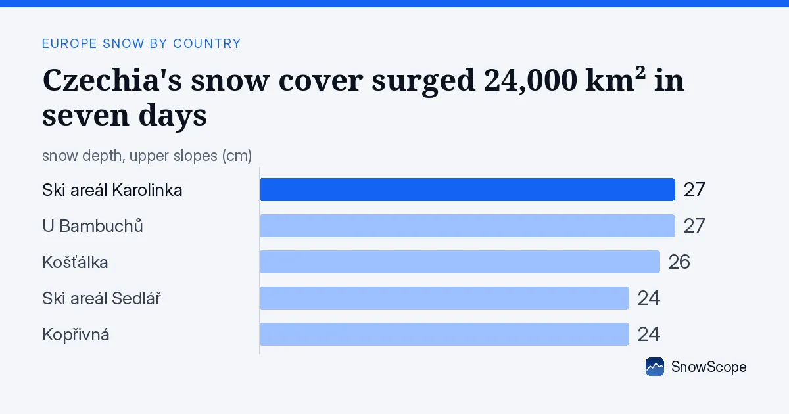
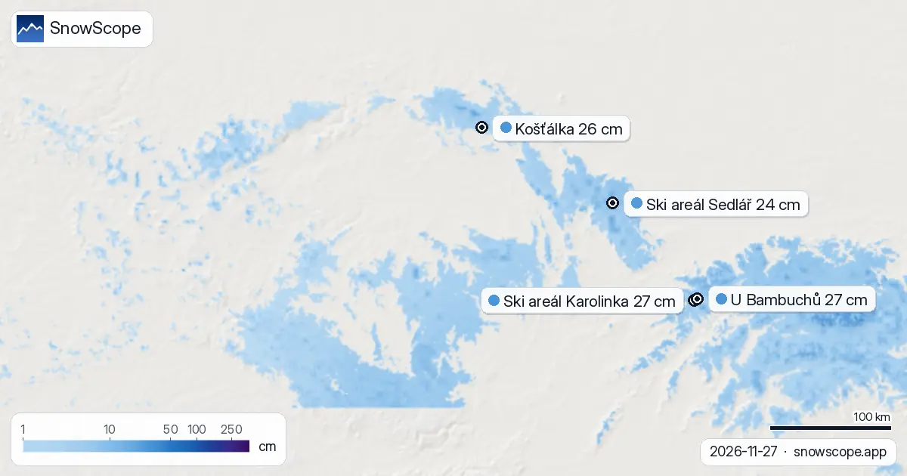
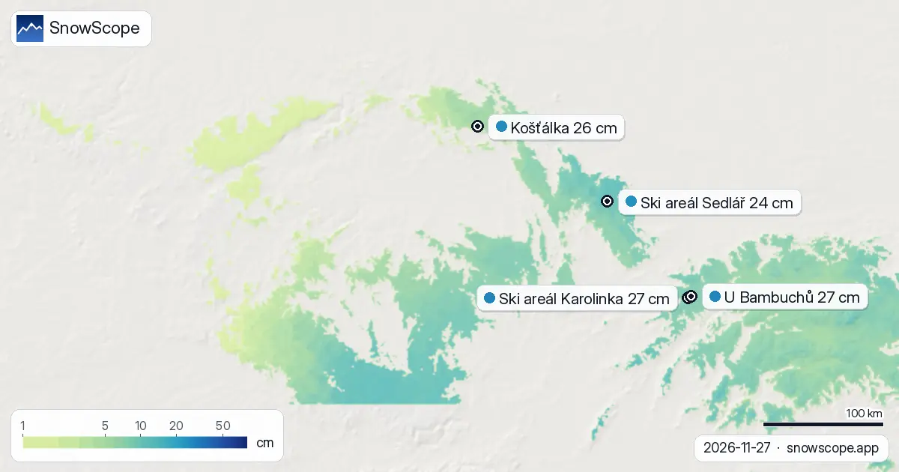

Czechia's snow cover surged 24,000 km² in seven days
Czechia's snow-covered area exploded from just 420 square kilometres seven days ago to 24,460 km² today. The jump happened almost overnight, with most of the new cover arriving in the past two days as moist air swept across the mountains.
See the live snow forecast for Ski areál Karolinka in the SnowScope appSnow depth, powder alerts and the 3D map, free.
From bare ground to 86% white in one week
A week ago, snow was scarce. The mountains showed mostly rock and grass, with only 420 km² cloaked in white across the country's ski terrain. By yesterday, that figure had crept to 23,970 km². Then, in the past 24 hours, another 490 km² turned white. Today, 86% of Czechia's mapped ski area—24,460 out of 28,470 km²—lies under snow.
This kind of reversal is what transforms a marginal season into one worth watching. The snow line now sits at 500 metres elevation, meaning even modest hills carry a base. The transformation was so swift that it feels less like a gradual build and more like a switch flipped.
| Day | White area | Most new snow in 3 days | Deepest resort |
|---|---|---|---|
| Saturday 21 November | 620 km² | 3 cm | Ramzová |
| Sunday 22 November | 490 km² | 3 cm | Figura Praděd |
| Monday 23 November | 3,120 km² | 5 cm | Dolní Morava sport & relax resor |
| Tuesday 24 November | 5,090 km² | 6 cm | Košťálka |
| Wednesday 25 November | 4,140 km² | 5 cm | Košťálka |
| Thursday 26 November | 23,990 km² | 11 cm | Ski areál Karolinka |
| Friday 27 November | 24,460 km² | 12 cm | Ski areál Karolinka |

Where the heaviest snow fell
The Jeseníky mountains led the charge, accumulating 13 cm of fresh snow in the past three days. The Beskydy and Šumava followed closely with 12 cm each—enough to anchor a season that looked dire only days ago.
On the ground, Ski areál Karolinka and U Bambuchů now carry 27 cm, the deepest bases across the country's resort network. Ski areál Sedlář, sitting higher at 866 metres, holds 24 cm after gaining 11 cm in three days. These elevations matter: between 1,000 and 1,500 metres, the SnowScope map shows an average depth of 6 cm with snow cover at 99%, whilst lower terrain between 500 and 1,000 metres averages 5 cm at 85% coverage.

Three metres made the difference
Košťálka sits at 764 metres and now carries 26 cm—exactly double its usual November depth of 13 cm for this date. Measured at the station, it has gained 17 cm above its long-term average, reaching depths that rival peak winter months on the calendar. This resort has also grown from 9 cm a week ago to 26 cm today, a rise that underscores just how much the past few days have reset the season.
The elevation rule held steady: higher slopes captured more. Upper-slope terrain across the mapped area shows fractionally deeper bases than the valleys, though the difference is modest given how recently snow arrived.
What the near term holds
The next three days bring no fresh snow to Czechia. The systems that delivered these 12 cm have moved east, leaving settled, cold air in place. Forecasted totals across the next week remain thin—only 2 cm expected to fall anywhere in the country through early December.
The first significant chance of new snow arrives on 3 December, with 2 cm possible on 4 December. That timing aligns with the broader European pattern: neighbouring Poland's highest peaks saw 35 cm and expect 2 cm more in the week ahead, whilst Slovakia's Vysoké Tatry hold 32 cm with 1 cm forecast. Czechia sits at the edge of the system, so each storm offers a narrow window.
What this means now
For the next 72 hours, the bases you see today are the bases you will ski. No consolidation from new fall will deepen them further. The 27 cm at Karolinka and U Bambuchů represents a usable foundation—marginal in hard conditions but adequate if the base hardens under frost. The 24 cm at Sedlář and Kopřivná (which gained 10 cm in three days) offer similar logic: serviceable, not generous.
The story is not one of abundance but of dramatic recovery. A season that looked over on 21 November—when only 620 km² of snow existed—has been rescued by this week's system. The question now is whether the quiet spell ahead allows that snow to consolidate, or whether thin bases revert to rock and grass by the time the next system arrives.
Looking ahead
The outlook hinges on early December. If snow arrives as forecast between 3 and 4 December, those 2 cm will add to what already lies on the ground. If those storms track south or weaken, Czechia will hold its current bases and wait longer for meaningful new fall. Either way, the past week has proven that the season is not settled. What seemed impossible seven days ago—85% snow cover across the country—is now real.
Tips for skiers
- Check which resorts near you now carry 24–27 cm. These bases are skibable but thin; stay on-piste and avoid rocky slopes until snow thickens or new fall arrives.
- Above 1,000 metres, snow cover is near complete. Lower elevations below 500 metres may still show patches of bare ground; plan routes carefully if you ski in valleys.
- The next significant snow window opens on 3 December. Until then, snow depth will not change, so current bases are what you have. Expect firm snow as it settles under cold nights.
- Before going off-piste, check the latest official avalanche bulletin for your region. Fresh snow on thin bases can be unstable in steep terrain.
- Track the forecast for 3–4 December. Even 2 cm will improve marginal bases noticeably. If those storms shift south, the next real chance may not arrive until later in the first week of December.
About these numbers
Resort snow depths are the deepest snow on the resort's upper slopes on the date shown; they are estimates for an area, not a measurement at one point. Forecasts can change. Always read the official avalanche bulletin before going off-piste.
Cite this report
For research, teaching or the press: the numbers and charts are free to reuse under CC BY 4.0 with this citation.
SnowScope (2026), Czechia's snow cover surged 24,000 km² in seven days, https://snowscope.app/blog/en/2026/11/czechia-snow-cover-gain-this-week-27-november-2026.html, accessed 2026-11-27
SnowScope (Atlas Labs). (2026, November 27). Czechia's snow cover surged 24,000 km² in seven days. SnowScope snow reports. https://snowscope.app/blog/en/2026/11/czechia-snow-cover-gain-this-week-27-november-2026.html
BibTeX
@misc{snowscope2026czechiasnowcovergainthis,
author = {{SnowScope (Atlas Labs)}},
title = {Czechia's snow cover surged 24,000 km² in seven days},
year = {2026},
month = nov,
howpublished = {\url{https://snowscope.app/blog/en/2026/11/czechia-snow-cover-gain-this-week-27-november-2026.html}},
note = {Published 2026-11-27 11:29 UTC; accessed 2026-11-27}
}· CC BY 4.0 · Methods, data and tools →
Ski areál Karolinka: snow and temperature by height, this winter vs last (tools) →
Follow Ski areál Karolinka
Free: a message when fresh snow is coming, and the forecast every morning.
More snow reports

Only Borovets and Bansko have a trace of snow at the top today, 2 cm each. A week ago Borovets had 11 cm. Day by day, and the one snowy day in the forecast.

From 13 to 19 November 2026 Slovenia got the most snow and kept it; Serbia and Croatia had a deep but short white weekend; Montenegro only on Durmitor; Bulgaria almost none. The ranking, with links to each country report.

Snow is falling on Slovenia's ski mountains today: about 37 cm on Kanin and 21 cm on Krvavec. Where the snow lies, how it compares with past winters, and the next snowy day.